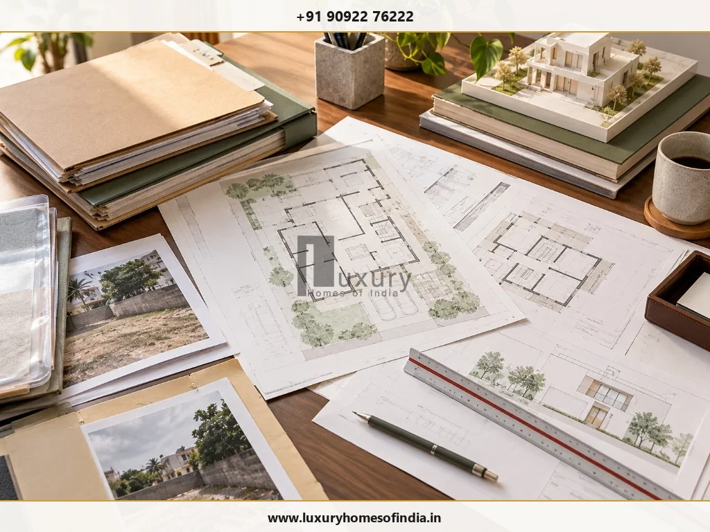

Tamil Nadu’s self-certification building-permission scheme provides a simplified route for eligible residential construction, subject to the applicable planning and building rules. Under G.O. Ms. No. 118, dated 8 August 2025, a qualifying building may be on a plot of up to 2,500 sq ft, with an FSI area of up to 3,500 sq ft, a maximum of two dwelling units, and either ground plus one floor or stilt plus two floors, subject to a maximum height of 10 metres.
Applicants must also satisfy the applicable requirements for road width, setbacks, water-body buffers, parking, documentation and building plans. The scheme is not an exemption from building regulations, and meeting the area limits alone does not establish eligibility.
Before applying, verify the current rules, property records and site-specific planning conditions. This guide explains the eligibility limits, required documents, application steps and checks homeowners should complete before proceeding.
What is the self-certification building permit scheme?
Self-certification is a simplified route for submitting residential building plans under the conditions prescribed by the Government of Tamil Nadu.
The residential scheme was introduced through amendments to the Tamil Nadu Combined Development and Building Rules, 2019. G.O. Ms. No. 133, dated 18 July 2024, introduced the scheme. G.O. Ms. No. 118, dated 8 August 2025, subsequently revised the definition and requirements for qualifying residential buildings. The amendment was published in the Tamil Nadu Government Gazette on 11 August 2025.
Official Tamil Nadu Government Gazette Reference
Review the statutory notification and official amendments to TNCDBR-2019 under G.O. Ms. No. 118:
Read the official Gazette notification (G.O. Ms. No. 118, 8 August 2025) →Self-certification does not mean that any small house can be constructed without meeting planning requirements. Applicants must provide accurate information, submit the required property documents and building plans, and comply with the rules applicable to the property.
What are the eligibility limits?
The 2025 amendment specifies the following limits for a self-certified residential building.
| Requirement | Limit under G.O. Ms. No. 118 |
|---|---|
| Maximum plot area | 2,500 sq ft (approx. 232.25 sq m) |
| Maximum FSI area | 3,500 sq ft (approx. 325.15 sq m) |
| Permitted use | Residential only |
| Maximum dwelling units | Two dwelling units |
| Permitted configuration | Ground plus one floor (G+1), or stilt plus two floors (S+2) |
| Maximum building height | 10 metres |
These limits are not a substitute for the complete eligibility conditions and other applicable planning requirements.
Does a plot below 2,500 sq ft automatically qualify?
No. Plot area is only one part of the eligibility assessment.
The proposed building must satisfy the applicable limits for FSI area, dwelling units, floor configuration and height. The site must also be checked against the relevant road-width, setback, water-body buffer, parking and building requirements.
A design that fits within the plot boundaries may still require changes to comply with the applicable rules.
Who can apply?
Under the 2025 amendment, the applicant may be the landowner, a leaseholder or a power-of-attorney holder intending to construct, reconstruct or develop a qualifying self-certified residential building.
The applicant should confirm that the relevant property documents establish the necessary ownership or legal authority for the proposed application.

What documents are required?
The Gazette specifies the following supporting documents and drawings for an application under the scheme.
- Site photographs: Clear color photographs showing the property, immediate boundary access, and site surroundings.
- Registered sale deed: A self-attested document establishing clear ownership and chain of title.
- Patta or Town Survey Land Register (TSLR): Self-attested revenue records in favour of the owner, as specified in the amendment.
- Layout, subdivision or survey documentation: The applicable approved layout or subdivision plan, Field Measurement Book (FMB), or other qualifying evidence specified in the rules. The amendment also refers to certain regularised layouts and evidence of a plot existing before 20 October 2016.
- Building-plan package: Architectural plans, the site plan, structural specifications, key plan and other required engineering details, signed by an architect or registered engineer and submitted in the prescribed PDF format.
The applicable requirements should be checked against the current official checklist before documents are uploaded.
What should the building drawings include?
The 2025 amendment specifies a drawing package compiled in a maximum of three A4 sheets, with required plans and supporting details distributed across those sheets.
The package includes the applicable site and ground or stilt floor plan, first-floor plan, and second-floor plan where a stilt-plus-two-floor configuration is proposed. It also includes the area statement, achieved FSI, total built-up area including the stilt floor where applicable, joinery schedule, terrace plan, elevation, section, specifications and key plan.
The prescribed drawings must show relevant plot dimensions, adjoining survey identifiers, setbacks, road details, room layouts and other required information. All sheets must contain the specified property and location details, north direction, applicant signature and the architect’s or registered engineer’s signature. Dimensions must be indicated in metres.
The drawing package should be prepared by an appropriately registered professional in accordance with the current requirements. A generic floor plan without the required site and regulatory information is not a substitute.
Road width, setbacks and water-body buffers
The 2025 amendment sets out planning parameters for self-certified residential buildings, including minimum road width, permissible FSI, setbacks and buffers from water bodies.
The requirements distinguish between continuous building areas, economically weaker section areas and other areas. The applicable category matters: the values should not be treated as universal standards for every property in Tamil Nadu.
For example, the amendment specifies a minimum road width of 1.5 metres for continuous building areas and economically weaker section areas, and 3.0 metres for other areas. The permissible FSI is specified as 2.0 for the listed self-certification categories, subject to the remaining rules.
Setbacks vary according to the applicable category, building height and, in some cases, plot width. Where a street alignment or new road is prescribed, the setback is measured from that alignment or road line; otherwise, the property boundary applies.
The amendment also specifies water-body buffers, distinguishing between canals of different widths, lakes and rivers.
These provisions must be read with the complete planning table and other applicable building rules. The official Gazette notification is the primary reference for the amended requirements.
Why is a site-specific review important?
A proposed building may satisfy the plot-area and FSI limits but still need changes because of road access, setbacks, water-body buffers, parking or other applicable conditions.
Before submitting the application, check the site dimensions and proposed drawings together. Confirm the applicable category, building height, floor configuration, road width and any relevant restrictions affecting the property.
How to apply for a self-certification building permit
The application should be submitted through the prescribed online planning-permission system, following the instructions and requirements applicable to the relevant local body.
7-Step Self-Certification Workflow:
- Step 1: Check eligibility. Verify the plot area (≤ 2,500 sq ft), proposed FSI area (≤ 3,500 sq ft), number of dwelling units (≤ 2), floor configuration (G+1 or S+2) and maximum building height (≤ 10 m). Check all other applicable planning and building requirements before finalising the design.
- Step 2: Verify property documents. Collect the required ownership, survey and layout records, along with site photographs. Confirm that the documents relate to the correct property and meet the applicable requirements.
- Step 3: Engage an appropriate registered professional. Arrange for the building plans and supporting drawings to be prepared and signed by an architect or registered engineer as required under the scheme.
- Step 4: Prepare the application package. Compile the plans, area statement, specifications, key plan and supporting records in the prescribed format. Check the drawing-sheet requirements (maximum 3 A4 sheets), dimensions in metres, property identifiers and signatures.
- Step 5: Submit through the official portal. Enter the required applicant and property details, select the relevant local body and application service, upload the documents and follow the current portal instructions.
- Step 6: Check and pay the applicable charges. Review the fee and payment details shown for the particular application. Do not rely on an old fee quotation or assume that charges are identical across locations and circumstances.
- Step 7: Retain the application and permission records. Keep the application reference, payment receipt, submitted drawings and permission issued through the prescribed process. Verify the status and applicable conditions before starting construction.
Official Portal Link for Online Submission
Official starting point for building plan applications across Tamil Nadu urban local bodies:
Tamil Nadu Urban ePay — Building Plan Approval Single Window Portal →Note: Confirm that the service and workflow are current before submitting an application.
Does self-certification mean there will be no inspection?
No. Self-certification should not be interpreted as freedom from regulatory scrutiny.
The 2025 amendment requires the applicant to certify the truthfulness of the information and documents submitted online. It also requires the applicant to indemnify the competent authority against claims arising from permission issued on the basis of self-certified records.
Applicants should retain accurate records and ensure that construction follows the permitted plans and applicable requirements. Any inspection, verification, correction, cancellation or enforcement action must be handled under the governing provisions and the competent authority’s directions.
Do not assume that an uploaded application or drawing alone authorises construction. Confirm the actual permission status and conditions for the property.
Common mistakes to avoid
- Assuming plot area is the only eligibility condition: The scheme also specifies strict limits for FSI area (3,500 sq ft), dwelling units (max 2), building configuration (G+1 or S+2) and height (10 m), alongside other planning requirements.
- Submitting incomplete property records: Missing or inconsistent ownership, survey or layout documentation can create application delays or rejections. Verify the current document checklist before submission.
- Using drawings without the required professional signature: The amendment specifies building plans signed by an architect or registered engineer. Confirm the relevant professional registration and drawing sheet conventions.
- Ignoring setbacks and water-body buffers: A small plot does not automatically qualify for every proposed building layout. Check the applicable planning category and site conditions.
- Treating self-certification as automatic approval of any design: The scheme has defined eligibility and compliance requirements. Confirm the permission issued and do not begin work merely because the proposed building appears to meet the broad area limits.
- Relying on outdated online information: The 2025 amendment changed the eligibility definition and planning parameters. Older articles may describe earlier limits. Check the latest official rules and subsequent amendments before applying.
Planning a Residential Project in Tamil Nadu?
Ensure your plot feasibility, building plan calculations, and municipal permits align seamlessly under TNCDBR rules. Consult with Luxury Homes of India's master engineering team.
Book a Technical Plot AssessmentFrequently asked questions
Planning a residential project in Tamil Nadu?
Before finalising a residential design, confirm whether the self-certification scheme applies to the property and the proposed building. Verify the current rules, assemble the required property records and have the drawings prepared by the appropriate registered professional.
For homeowners planning a bespoke home or villa, the next step is to define the plot constraints, design brief and required professional responsibilities before proceeding with design and construction planning.